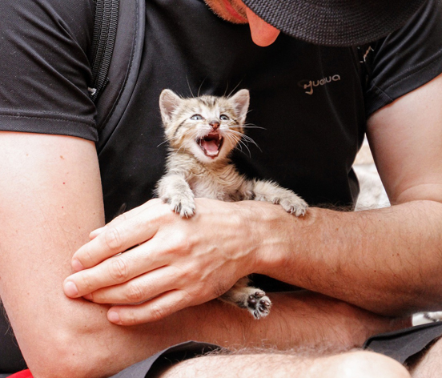

¿CÓMO PUEDES AYUDAR A ANIMALES S.O.S.?
Puedes ayudar de la siguientes Formas:
Voluntariado
puedes acudir a nuestras instalaciones de Achachicala. Para inscribirte solo debes llevar la fotocopia de carnet de identidad si eres menor a 18 años debes tener el permiso escrito de tus padres. Puedes ayudarnos a verificar hogares y casos de maltrato animal.
Padrino de un Animal
con dueños responsables pero de bajos recursos, los padrinos dan una determinada cantidad de dinero mensualmente por ejemplo 100 Bs. También puede dejar su aporte en la veterinaria Canito ubicada en la calle Illampú 665, entre la calle Graneros y Plaza Eguino, Zona Rosario en la ciudad de La Paz o en nuestras Instalaciones de Achachicala. Con ese dinero se ayuda a personas de bajos recursos pero responsables con sus animales. Nuestra veterinaria es popular pero hay gente muy cariñosa que no tiene para completar una esterilización, un tratamiento o una cirugía de emergencia.
Aportante de Animales S.O.S
este monto sirve para ayudar a mantener los gastos operativos de auxilio de animales en situación crítica en las calles. Puedes dar tu aporte mensual depositando en nuestra cuenta bancaria a nombre de Animales S.O.S. en el Banco Mercantil Santa Cruz 4021698924, nos reporta la donación, también puede pasar por la veterinaria Canito o en nuestras instalaciones de la Zona de Achachicala (La Paz). Si te encuentras en Potosí, Oruro, Trinidad o Villa Montes donde tenemos filial ó escríbenos al correo
